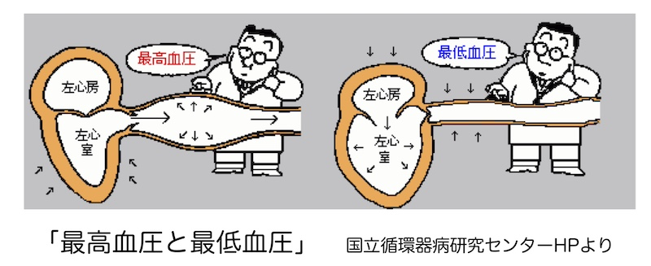
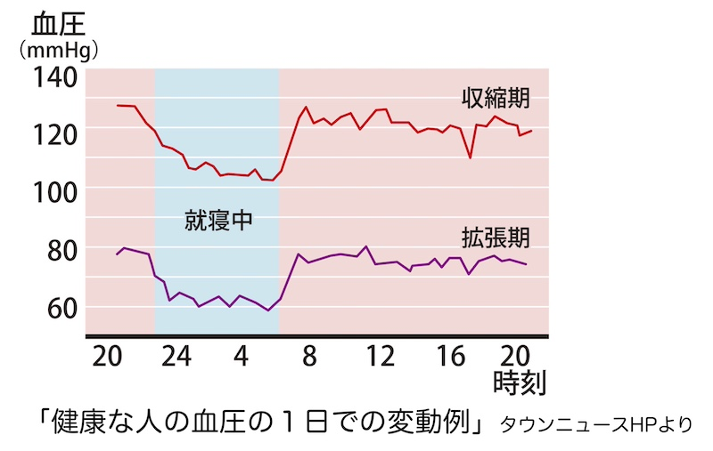
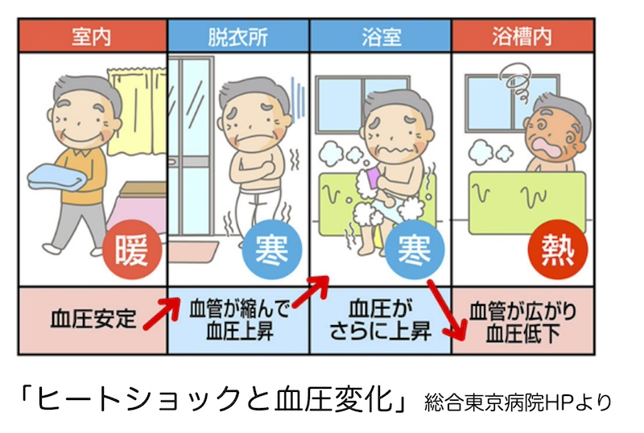

公開日：2026年5月｜最終更新：2026年6月
高齢になると血圧が高くなる人が増えてきます。しかし、血圧は単に「低ければ良い」「高いとすぐ危険」というものではありません。
血圧の仕組みを理解し、「適切に上手に付き合うこと」が大切です。
加齢とともに血管は次第に硬くなります。若い頃はゴムのように柔らかいですが、高齢者の血管は硬く伸びにくくなります。
このため、心臓が血液を送り出す時に血圧が高くなりやすくなります。これはある意味で「加齢による自然な変化」ともいえます。
また高齢者では、「上の血圧（収縮期血圧）」だけが高くなることもよくあります。
血圧が高い状態が続くと、血管に負担がかかります。特に高齢者ではダメージを受けやすくなります。
ただし、これら血圧の影響は、個人差があり「血圧の値だけで判断できるものではありません」。
日本では概ね「140/90 mmHg未満」が目安とされています。
ただし、高齢者では体調や持病により適正な血圧は異なるため、医師の指導に従うことが重要です。

血圧が高い場合、降圧薬が処方されることがあります。薬は血圧を安定させるために重要です。
自己判断で中止したり、量を変えたりすることは避けましょう。
血圧は生活習慣の影響も受けます。
無理のない範囲で、生活習慣を整えることが大切です。
塩分の取りすぎは血圧を上げる可能性がありますが、個人差も大きく、塩分だけでは説明できません。
極端な制限よりも、「バランスの良い食事」が重要です。
「カリウム」・「マグネシウム」・「食物繊維」の多い食事は血圧低下に有効とされています。
高齢者では、過度に制限すると、低栄養やフレイルの原因になることもあります。
血圧は低ければ安心というわけではありません。
「めまい」、「立ちくらみ」、転倒の原因になることがあります。
特に「起立性低血圧」は高齢者に多く見られます。
家庭血圧は、診察室よりやや低く出る傾向があります。
朝起床後・夜就寝前の測定が推奨されています。
記録をつけることで診察時の参考になります。

血圧管理では、医師との連携が重要です。
血圧の目標値は個人差があるため、主治医と相談して決めることが大切です。
「冬」に問題になるのが「ヒートショック」です。
暖かい部屋から寒い脱衣所や浴室に移動すると、血圧が上昇し、その後、熱い湯につかることで血圧が低下します。
このような急激な血圧の変化は、心臓や血管に大きな負担をかけることがあります。
注意したいのは、「寒い脱衣所」「非常に熱い湯」「長時間の入浴」です。
脱衣所や浴室を「暖める」、「温めのお風呂」など、温度差を小さくする工夫が大切です。

高齢者の血圧は、加齢・生活習慣・個人差など様々な要因で変化します。
大切なのは、数値だけにとらわれず、「体調全体を見ながら上手に付き合うこと」です。
※本ページは公的機関および学会の情報などをもとに作成しています。